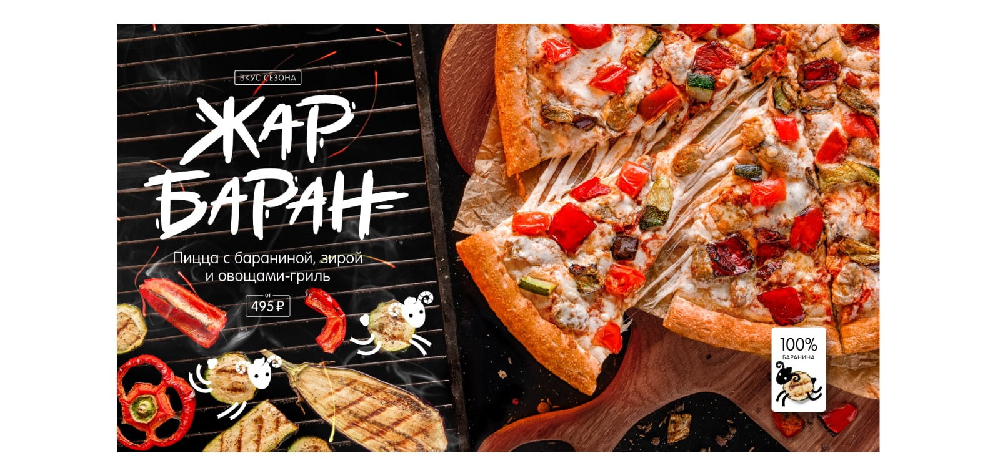
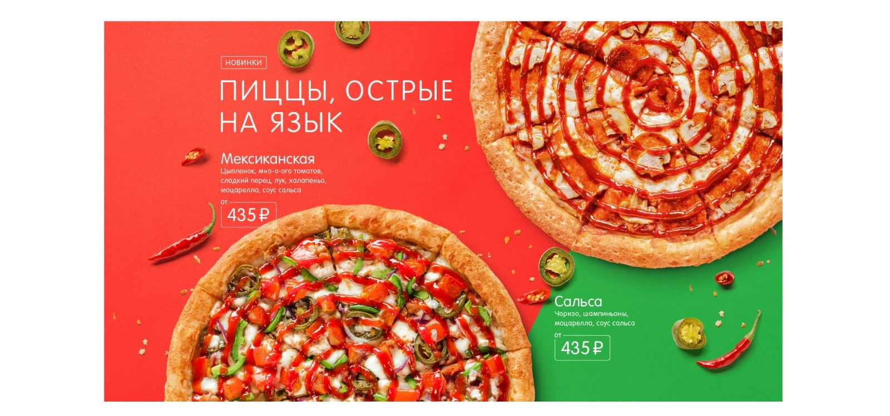
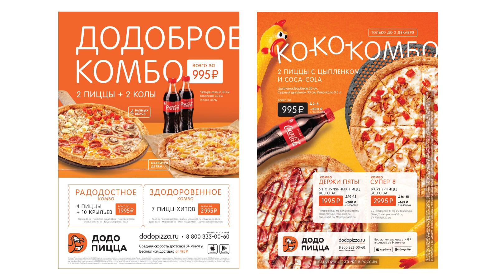
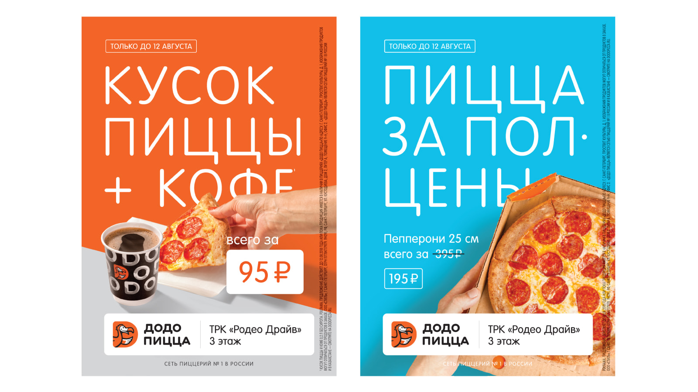
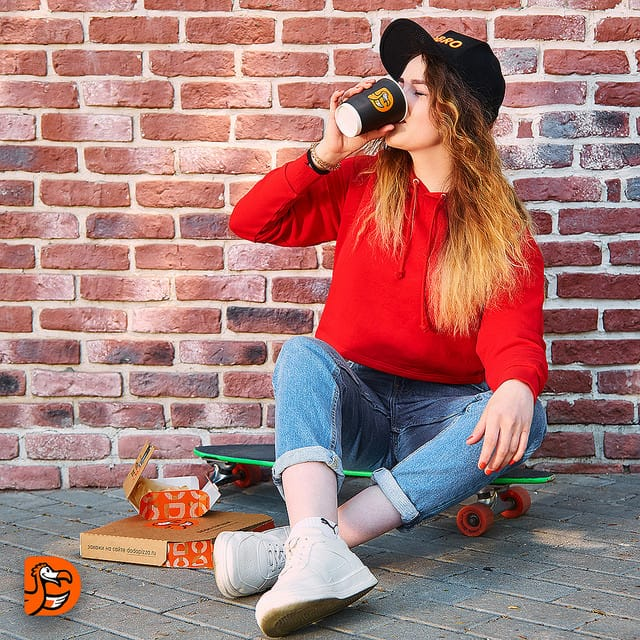
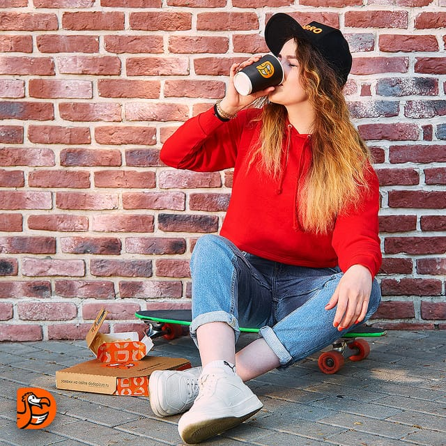
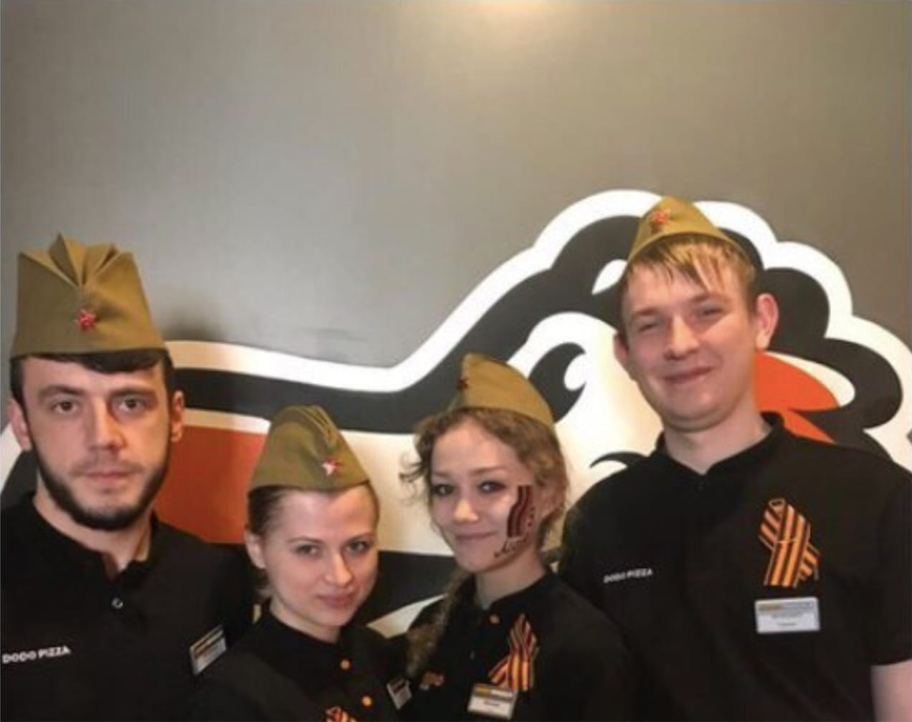
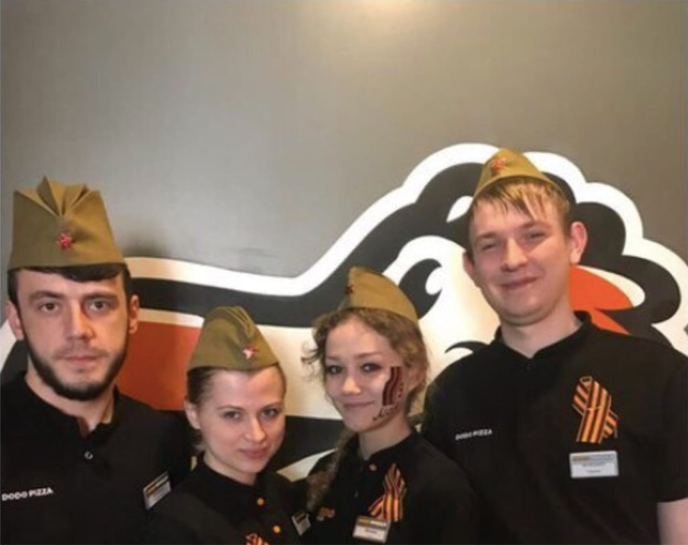

Mockups
We use three types of mockups. Product mockups advertise our products. Promotion mockups are used to inform customers about our special offers. Image mockups are supposed to attract attention to our company activities: opening, recruiting, etc.
Общие дизайн-принципы
Создавая макеты, мы следуем определенному набору правил или, как мы их называем, принципов. Они немного различаются между собой для каждой категории, но есть и общие:
— Создаем макеты с учетом системы якорей: оранжевого цвета, набора фирменных иконок, шрифтовой системы и системы сеток.
— Мы любим не перегруженную, легкую для восприятия верстку: один носитель — одно сообщение.
— Предпочитаем эмоциональный, но простой и понятный текст.
— Создаем фотографии и иллюстрации со смыслом, и любим, когда в них заложен твист.
— Используем шаблоны с заданным набором иконок и кегельной сеткой.
Имиджевые макеты
С помощью имиджевых макетов мы продвигаем бренд в целом, а не конкретный продукт.
К таким макетам мы относим федеральные кампании, оформление пиццерий и все, что связано с наймом сотрудников.
— Мы предпочитаем выделяться благодаря оранжевому фону на цветных фотографиях или оранжевым акцентам на черно-белых.
— Придумываем простые, но креативные сообщения. Например, «Додо последнего кусочка», «Додоставляем».
— Показываем эмоциональные фотографии, которые раскрывают идею сообщения.
Product marketing
Чтобы было проще, мы разделили продукты на три категории.
Продукты A или «звездные» продукты
К ним относятся сезонные пиццы и «революционные» продукты.
Как продвигаем:
— Подчеркиваем на макете вкус и качество продукта.
— Помогаем раскрыть вкус продукта названием. Например, название «Жар-Баран» сразу объясняет, что пицца с бараниной.
— Изображаем продукт на фотографии в выигрышном свете и вызываем ей обильное слюноотделение.
— Обязательно добавляем в макет «изюминку», как, например, знак мира на макете пиццы «Четыре сыра».
— Создаем уникальный леттеринг. Он должен разделять общие черты с фирменным заголовочным шрифтом.
— Придумываем иммерсивные решения: от креативной кампании в соцсетях до оформления фасадов и интерьеров пиццерий.
— А еще мы можем иногда нарушать собственные правила, чтобы создать вау-продвижение.

Продукты B
Здесь собрались пиццы с обновленными рецептами, новые закуски и напитки.
Как продвигаем:
— Создаем дизайн на основе шаблона, но иногда можем отойти от этого правила.
— Предпочитаем яркие, чистые цвета. Они не должны отвлекать внимание от продукта.
— Показываем качество и вкус продукта простыми, но вкусными фотографиями.
— Набираем название шрифтом для заголовков. Иногда позволяем себе нарисовать простой леттеринг, как в макете с «Рыжим рожком».



Продукты С
В этой категории мы объединили тестовые продукты. Обычно после тестового запуска мы создаем новые макеты, но уже с подходом категории A или B.
Как продвигаем:
— Создаем макеты только на основе шаблонов.
— Набираем названия шрифтом для заголовков. Никогда не создаем уникальный леттеринг.
— Используем только каталожные фотографии.
— Подбираем цветовую схему из списка дополнительных цветов ТВ-меню в соответствии с основными ингредиентами продукта.
Акционные макеты
В нашей системе акционные макеты бывают двух типов:
— Комбо-предложения.
— И, собственно, акционные.
Все акционные макеты создаются на основе шаблонов с набором иконок и кегельной сетки. Элементы в этих наборах уже заданного размера, который не нужно адаптировать под формат. Эдакий UI Kit для рекламных макетов.
Комбо-предложение
Как продвигаем:
— Создаем на основе шаблона.
— Делаем акционные макеты визуально похожими между собой.
— Придумываем простой и понятный заголовок, который раскрывает выгоду предложения.
— Показываем идею «много за мало» через количество продуктов или ситуацию потребления.
— Показываем качество продукта через реалистичные и вкусные фотографии.
— Кодируем акционные макеты в большинстве случаев оранжевым цветом, но «играем» с текстурами, чтобы отделить одну рекламную кампанию от другой.
— Используем на макетах цвета, отличные от оранжевого, когда понимаем, что на рекламном носителе с разных сторон будут разные акционные предложения.

Акционные предложения
Как продвигаем:
— Создаем на основе шаблона.
— Делаем акционные макеты визуально похожими между собой.
— Придумываем простой и понятный заголовок, который раскрывает выгоду предложения.
— Показываем качество продукта через реалистичные и вкусные фотографии.
— Кодируем акционные макеты в большинстве случаев оранжевым цветом, но «играем» с текстурами, чтобы отделить одну рекламную кампанию от другой.
— Используем на макетах цвета, отличные от оранжевого, когда понимаем, что на рекламном носителе с разных сторон будут разные акционные предложения.



 
 
